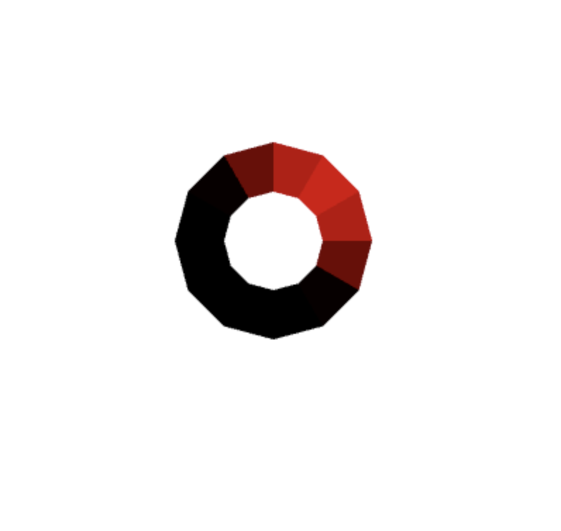
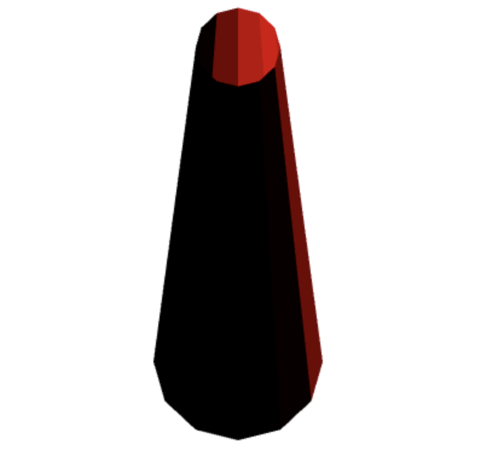
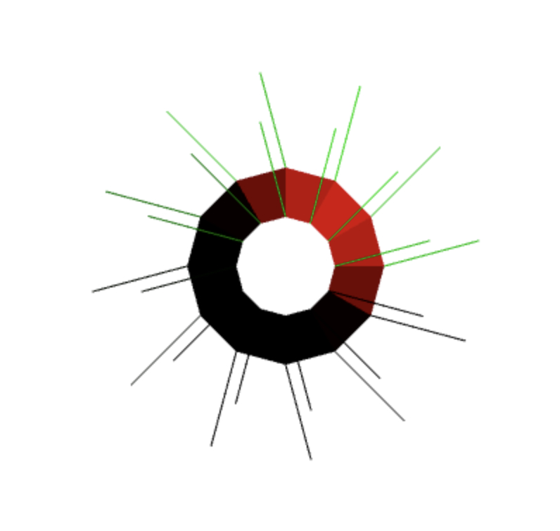
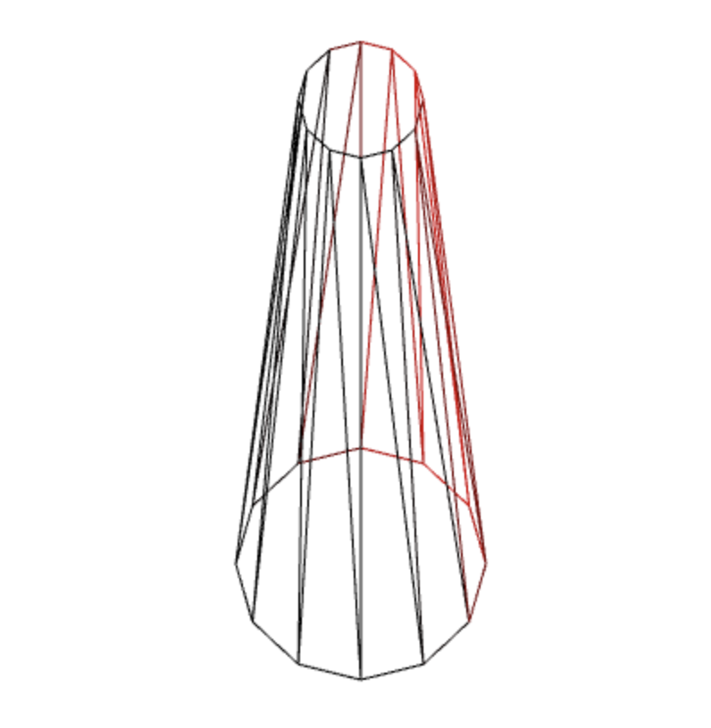

This lab renders a red cylinder at 0,0 on startup. The cylinder is drawn with 24 triangles using points
from a smaller circle with radius = 0.5 at z = 10 to a larger circle with radius = 1.0 at z = 0.
There is a white light source at the coordinate point (1,1,1).
There are three toggle buttons that change the camera position, normal vector display, and the render mode, respectively.
The camera angles are top and side, normal vectors are shown or hidden, and render mode is either wireframe or flat.
You can also left click at any point on the canvas to draw a red cylinder at a relative position, right click for a blue one.
Screenshots:
   